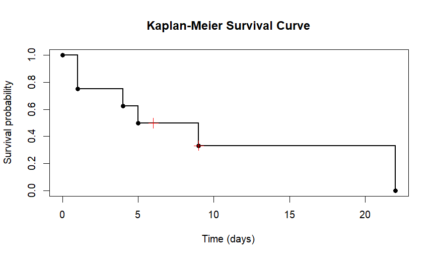
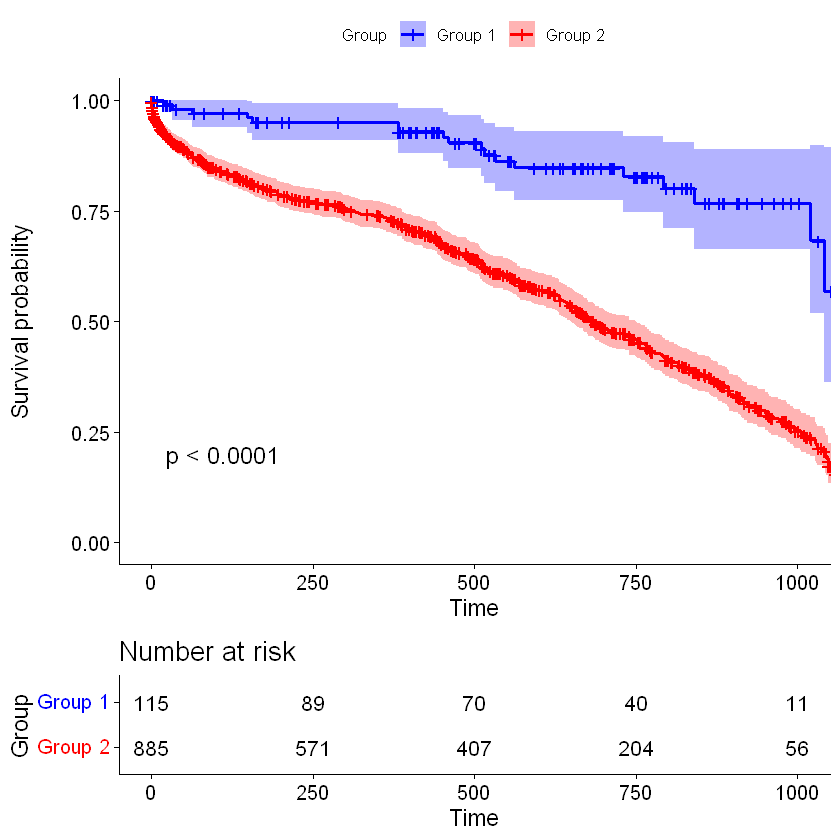
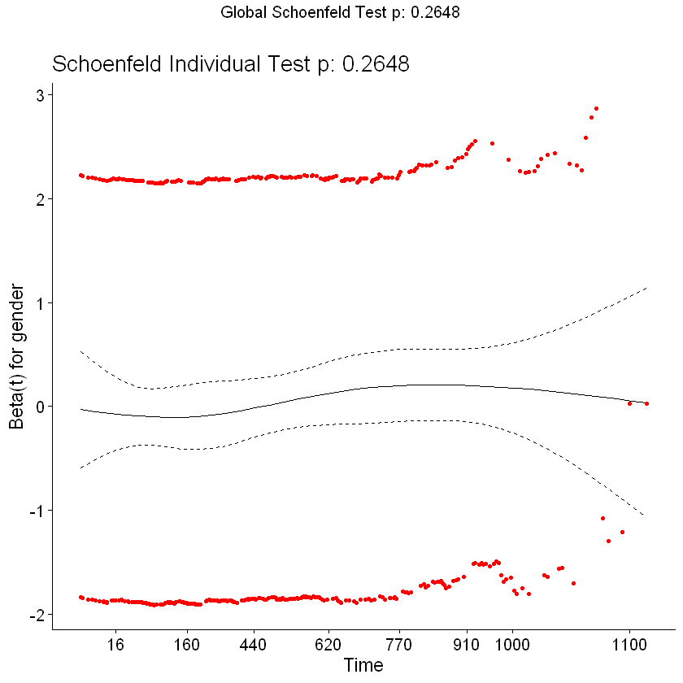
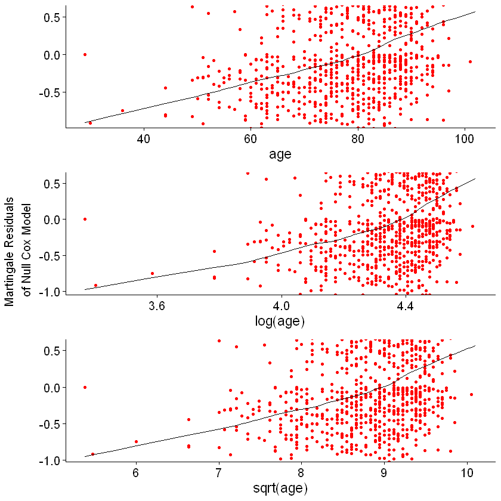

A life table is a demographic tool used to analyze death rates and calculate life expectancies at various ages.
Two Different Kinds: cohort or generational life tables, current or period life tables
Cohort life tables take an actual set of people born at the same time and follow them up for their whole lives, also known as birth cohorts.
Period life tables take a hypothetical cohort of people born at the same time using census data and uses the assumption that they are subject to the age-specific mortality rates of a region or country.
A set or cohort of patients are enrolled at time zero and then followed up to see who gets the outcome of interest, such as death, and when they get it.
Loss to follow up (censored): Participants who drop out of the study whose outcome we don't know exactly, shown by a cross (+) next to the time value.
The probability of survival past time t is called survival function.
Time (t) in Days
Number of Patients Alive at Time t
Number of Patients Who Died at Time t
Probability of Survival Past Time t
0 (study starts)
100
0
1
1
100
2
0.98
2
98
??
??
3
??
??
??
Kaplan-Meier Table
A non-parametric life table used in survival analysis to estimate the probability of an event occurring over time.
No assumption of underlying probability distribution.
Start by computing the proportion of patients that survive the day.
For example, on day 0, there are no deaths. Hence the proportion surviving is 1. On the following day, 2 out of 8 patients don't make it; 75% survive the day.
The probability of surviving past day t is simply the probability of surviving past day t-1 times the proportion of patients that survive on day t.
Time (t) in Days
Patients Alive at Time t
Deaths at Time t
Proportion Surviving Past Time t
Probability of Survival Past Time t
0 (study starts)
8
0
(8−0)/8 = 1
1
1
8
2
(8−2)/8 = 0.75
1 × 0.75 = 0.75
4
6
1
(6−1)/6 = 0.83
0.75 × 0.83 = 0.623
5
5
1
(5−1)/5 = 0.8
0.623 × 0.8 = 0.498
6+
4
0
4/4 = 1
0.498 × 1 = 0.498
9
3
1
(3−1)/3 = 0.667
0.498 × 0.667 = 0.332
9+
2
0
2/2 = 1
0.332 × 1 = 0.332
22
1
1
0/1 = 0
0
Survival Curve
The plot of the survival function versus time is called the survival curve.
To create the survival curve, plot the time column on x axis against the probability of survival column on y axis, with 0 on the bottom and 1 as the maximum.
The probability of survival is assumed to be the same until the next death occurs, that's why survival curve looks like steps.
On the survival curve, censored participantes are marked by a cross (+) on the survival curve.

Kaplan–Meier survival curve
R Codes for Survival Curve
> # Install packages (run once if not already installed)
> install.packages("survival")
# > Load survival package
> library(survival)
# Define event times
> time <- c(t1, t2, t3, ...)
# Define survival probabilities at each time
> survival <- c(S1, S2, S3, ...)
# Define censoring times
> censor_time <- c(c1, c2, ...)
# Survival probability at censoring times
> censor_survival <- c(Sc1, Sc2, ...)
# Create Kaplan-Meier step curve
> plot(time, survival,
+ type = "s",
+ lwd = 2,
+ xlab = "Time",
+ ylab = "Survival probability",
+ main = "Kaplan-Meier Survival Curve",
+ ylim = c(0,1))
# Add event points
> points(time, survival, pch = 16)
# Add censor marks
> points(censor_time, censor_survival, pch = 4, cex = 1.5, col = "red")
Log-Rank Test
A statistical method used to compare two survival curves to determine if they are significantly different in probability.
It's non-parametric, no need to know anything about the shape of the survival curve or the distribution of survival times.
Based on a comparison of the observed numbers of deaths and the numbers of deaths expected if in fact there were no difference in the probability of death between the groups.
It uses a chi-squared test.
R Codes for Log-Rank Test
> # Load survival package
> library(survival)
> # import the dataset
> df <- read.csv("dataset.csv", header = TRUE, sep = ",")
> # Example data: Time to event (days) and status
> # time: follow-up time
> # status: event indicator (1 = event occurred, 0 = censored)
> time <- df$time
> status <- df$status
> # Group variable (e.g., treatment vs control)
> group <- c("A","A","A","B","B","B","B","B")
> # Create a survival object
> surv_obj <- Surv(time, status)
> # Fit survival curves by group
> fit <- survfit(surv_obj ~ group)
> # Plot the survival curves
> plot(fit,
+ col = c("blue","red"),
+ lty = 1:2,
+ xlab = "Time (days)",
+ ylab = "Survival probability",
+ main = "Kaplan-Meier Curves by Group")
> legend("topright", legend = levels(factor(group)), col = c("blue","red"), lty = 1:2)
> # Run log-rank test to compare groups
> # You can add rho = 0 for standard log-rank, or rho = 1 for Gehan-Wilcoxon test
> logrank_test <- survdiff(surv_obj ~ group)
> # View test result
> logrank_test
Example
> # Log-rank test comparing age groups
> survdiff(formula = Surv(fu_time, death_num) ~ age_65plus, data = df)
N Observed Expected (O-E)^2/E (O-E)^2/V
age_65plus=<65 115 18 67 35.85 41.7
age_65plus=≥65 885 474 425 5.65 41.7
Chisq= 41.7 on 1 degrees of freedom, p= 1e-10
Interpretation
The chi-squared statistic is 41.7 with 1 degree of freedom.
The p-value is extremely small (1e-10), indicating a statistically significant difference.
Patients aged ≥65 have more observed events (474) than expected (425), suggesting higher risk.
Patients aged <65 have fewer observed events (18) than expected (67), suggesting lower risk.
Overall, age ≥65 is strongly associated with increased event probability.
Cox Proportional Hazards Model
Caplan-Meier plot and log-rank test are great for exploring the relationship between one predictor and mortality over time.
In contrast, Cox's approach can handle multiple predictors. It is a type of regression.
The hazards are assumed by the model to be proportional.
Hazard is the risk of death at a given moment in time.
In other words, h(t) is the probability of dying at time t having survived up to time t.
The hazard can change over time.
The way the hazard changes over time is called the hazard function or hazard rate.
The hazard is proportional (Hazard 1 = Hazard 2 * N). One hazard divided by the other is called the hazard ratio.
The risk set at time t is defined as the set of patients at time t that are at risk of experiencing the event.
If the Cox model has two or more predictor variables, it is called the multiple Cox model.
Risk models can put patients into, for example, low-, medium-, or high-risk in a process called risk stratification.
You should know and mention the reference group(s) while interpreting the results.
By default, R sets the reference category as the lowest value for the variable.
In case there are missing values (NAs), they can be replaced by another value (such as 9) as the new category.
Disadvantages of the Cox Model
Cox does not care about the distribution of survival times or what the hazard function looks like. This is why it is called semi-parametric.
The Cox model was developed to look at the effect of covariates on the hazard function rather than to estimate survival times.
There are several fully parametric models such as Weibull, exponential, log normal, and log-logistic models, where hazard function has to be specified.
survival analysis can be run in a Bayesian framework. Bayesian analysis is in general more complicated but very powerful.
R Codes to Describe the Data
> # import the dataset
> df <- read.csv("dataset.csv", header = TRUE, sep = ",")
> # Use summary() for numeric variabels
> summary(df$age)
> # Use table() for categorical variables
> t <- table(df$gender, exclude = NULL)
> # Add the total column
> addmargins(t)
> # Get the percentages rounded to one decimal point
> round(100*prop.table(t),digits=1)
> # Change the reference categories (ref) if Required
> df$gender <- relevel(df$gender, ref = 2)
R Codes for Cox Regression
> # Install packages (run once if not already installed)
> install.packages("survival")
> install.packages("survminer")
> # Load survival package
> library(survival)
> # Example dataset variables
> # time: follow-up time
> # status: event indicator (1 = event occurred, 0 = censored)
> # predictor1, predictor2: explanatory variables
> time <- df$time
> status <- df$status
> # Create survival object
> surv_obj <- Surv(time, status)
> # Fit Cox proportional hazards model
> cox_model <- coxph( formula = surv_obj ~ predictor1 + predictor2, data = df)
> # View model summary
> summary(cox_model)
> # Extract hazard ratios
> exp(coef(cox_model))
> # Confidence intervals for hazard ratios
> exp(confint(cox_model))
> # Test proportional hazards assumption
> ph_test <- cox.zph(cox_model)
> ph_test
> # Plot proportional hazards test
> plot(ph_test)
Example
> coxph(formula = Surv(fu_time, death_num) ~ age_65plus + diabetes +
+ copd + hypertension, data = df)
n = 1000, number of events = 492
HR 95% CI p
age_65plus≥65 4.15 (2.59 – 6.65) 3.35e-09 ***
diabetes 0.90 (0.73 – 1.10) 0.292
copd 1.08 (0.88 – 1.32) 0.451
hypertension 0.96 (0.80 – 1.16) 0.704
Model tests:
Likelihood ratio test = 58.26 on 4 df, p = 7e-12
Wald test = 37.17 on 4 df, p = 2e-07
Score (log-rank) test = 43.55 on 4 df, p = 8e-09
Concordance = 0.572
Definitions
Hazard Ratio (HR): The hazard ratio represents the relative risk of the event associated with a predictor. HR > 1: increased risk; HR < 1: decreased risk compared with the reference group.
95% Confidence Interval (95% CI): The range of values within which the true hazard ratio is expected to lie with 95% confidence. If it includes 1, the association is not statistically significant.
p-value: Measures the statistical significance of each predictor. A small p-value (typically < 0.05) suggests that the predictor is significantly associated with the hazard of the event.
Likelihood Ratio Test: Compares the fitted Cox model with a model that contains no predictors. A significant result indicates the predictors improve the model's ability to explain the outcome.
Wald Test: Tests whether individual regression coefficients differ significantly from zero. It is commonly used to assess the significance of each predictor variable in the model.
Score Test (Log-rank test): Tests the association between predictors and survival time. In Cox models, it is mathematically related to the log-rank test used to compare survival curves.
Concordance (C-index): Measures the model’s ability to correctly rank individuals by risk. Values range from 0.5 (no predictive ability) to 1.0 (perfect prediction).
R-squared: A measure of the proportion of variation in the outcome explained by the model. In Cox models, pseudo R-squared is used and values are typically lower than in linear regression.
Proportional Hazards Assumption: The Cox model assumes that hazard ratios remain constant over time. This assumption can be tested using methods such as the cox.zph() test.
Interpretation
The dataset includes 1,000 patients, of whom 492 experienced the event during follow-up.
Patients aged ≥65 years have a hazard ratio of 4.15 compared with those aged <65, so their risk of the event is more than four times higher. This association is statistically significant (p < 0.001).
Diabetes shows HR = 0.90, but the confidence interval includes 1 and the p-value is not statistically significant (p = 0.292). Therefore, no clear association with the event is observed.
COPD shows HR = 1.08, but this association is not statistically significant (p = 0.451).
Hypertension shows HR = 0.96 and is also not statistically significant (p = 0.704).
The overall model tests (Likelihood ratio, Wald, and Score tests) are statistically significant, indicating that at least one predictor is associated with the outcome.
The concordance statistic (0.572) suggests that the model has modest ability to distinguish between individuals with higher and lower risk.
R Codes for Kaplan-Meier Plot Using Survminer
> # Load survminer package
> library(survminer)
> # Fit Kaplan-Meier survival curves
> fit <- survfit(surv_object ~ group, data = df)
> # Plot survival curves using survminer
> ggsurvplot(fit,
+ data = df,
+ risk.table = TRUE,
+ pval = TRUE,
+ conf.int = TRUE,
+ xlab = "Time",
+ ylab = "Survival probability",
+ legend.title = "Group",
+ legend.labs = c("Group 1", "Group 2"),
+ palette = c("blue", "red"))
> # Alternative plot with "ggplot2" package
> autoplot(fit) + theme_bw()
> # Another Way to plot
> plot(fit)
risk.table: Displays the number of individuals at risk at each time point.
pval: Shows the p-value for the log-rank test on the plot.
conf.int: Adds confidence intervals around the survival curves.
xlab / ylab: Labels for the axes.
legend.title: Title of the legend.
legend.labs: Labels for the groups.
palette: Colors used for the survival curves.

Kaplan-Meier Survival Curve to Compare two age groups: age < 65 years (class 1) and age ≥ 65 years (class 2) against heart failure death.
R Codes for Handling Missing Values
> # The appropriate method depends on the study design, the proportion of missing values, and the assumptions of the statistical analysis.
> # Suppose "ethnicgroup" is a categorical (factor) variable
> ethnicgroup <- factor(df[,"ethnicgroup"])
> # Add a new category "9" to represent missing values
> levels(ethnicgroup) <- c(levels(ethnicgroup), "9")
> # Replace NA values with "9"
> ethnicgroup[is.na(ethnicgroup)] <- "9"
> # Other ways to handle missing values
> # Remove rows containing any missing values
> df_complete <- na.omit(df)
> # Keep only complete cases
> df_complete <- df[complete.cases(df), ]
> # Replace missing values with a constant value
> df$ethnicgroup[is.na(df$ethnicgroup)] <- 9
> # Replace missing values with mean for numeric variables such as age
> df$age[is.na(df$age)] <- mean(df$age, na.rm = TRUE)
> # Replace missing values with median for categorical variables
> df$income[is.na(df$ethnicgroup)] <- median(df$ethnicgroup, na.rm = TRUE)
> # Create a missing-value indicator variable
> df$ethnicgroup_missing <- ifelse(is.na(df$age), 1, 0)
Non-Convergence
It occurs when an iterative statistical algorithm fails to reach a stable solution within a specified number of iterations.
Causes: small sample size, multicollinearity, complete or quasi separation in data, poor starting values, overly complex model, outliers or sparse data
Consequences: parameter estimates are unreliable, standard errors cannot be computed correctly, model results should not be interpreted
Solutions: increase sample size, remove or combine highly correlated variables, simplify the model, standardize variables, provide better starting values, use penalized methods
The Proportionality Assumption
Residuals: They measure the difference between the model’s predicted values and the actual values from the data.
Residuals for Cox Model: Schoenfeld residual, Deviance residual, and Martingale residual
Schoenfeld Residuals: Test whether two hazard functions are parallel or proportional.
Deviance Residuals: Spot influential points.
Martingale Residuals: Test whether a continuous predictor, such as age, has a linear relation with the outcome.
The assumption that hazards are proportional for a given predictor can be tested graphically and with a p-value.
Check if the relation between the variables (e.g., male and female) changes by time through the graph.
If the assumption is met then the hazard lines will be roughly parallel to each other.
Note that that's only true when they're plotted on the log scale.
More Formal Way: run cox.zph(fit, transform="km", global=TRUE) from the "survival" package in R.
R Codes to Check Proportionality Assumption using Shoenfeld resuduals
⚠️ Before all R codes, load both "survival" and "survminer" packages using library().
> fit <- coxph(Surv(fu_time, death) ~ gender)
> temp <- cox.zph(fit)
> print(temp)
> plot(temp) # or ggcoxzph(temp) from the "survminer" package

Assessment of the proportional hazards assumption for the variable gender
using Schoenfeld residuals. The solid line represents the estimated time-varying
coefficient β(t), and the dashed lines represent the 95% confidence intervals.
Variable
Chi-square
df
p-value
Gender
1.24
1
0.26
Global test
1.24
1
0.26
Interpretation
The proportional hazards assumption was assessed using Schoenfeld residuals.
The test for the variable gender produced a chi-square statistic of 1.24 with a p-value of 0.26.
Since the p-value is greater than 0.05, there is no evidence that the proportional hazards assumption is violated for this variable.
The global test also shows a p-value of 0.26, suggesting that the proportional hazards assumption holds for the model overall.
The Schoenfeld residual plot shows no clear systematic trend over time, which further supports the proportional hazards assumption.
The line is pretty flat, meaning that the effect of gender changes little during the follow-up period. That’s good news.
A prettier version of the above plot can be obtained from the function ggcoxzph() in the "survminer" package.
This produces graphs of the scaled Schoenfeld residuals against the transformed time for each covariate
This method does not work well for continuous predictors or categorical ones with many levels because the graph becomes too cluttered.
R Codes to Check Proportionality Assumption using Deviance resuduals
DFBETA residuals for the variable age from the Cox proportional hazards model.
Each point represents the influence of an individual observation on the estimated
regression coefficient for age. The blue smoothed line shows the overall trend,
while the dashed red line represents zero influence.
Interpretation
DFBETA residuals measure the influence of each individual observation on the estimated regression coefficient.
Values close to zero indicate that the observation has little influence on the coefficient estimate.
Large positive or negative values may indicate influential observations that substantially affect the model results.
In this plot, most points are centered around zero and no strong systematic trend is observed.
This suggests that no single observation has an excessively large influence on the estimated coefficient for age.
R Codes to Check Proportionality Assumption using DFBETA residuals
Deviance residuals for the variable age from the Cox proportional hazards model. These residuals measure
the contribution of each observation to the model deviance and help identify outliers
or observations poorly predicted by the model.
Interpretation
Deviance residuals assess how well each observation is fitted by the Cox proportional hazards model.
Positive values correspond to individuals that died too soon compared with expected survival times.
Negative values correspond to individual that lived too long compared with expected survival times.
Observations with large positive or negative residuals may represent potential outliers or poorly fitted cases.
In this plot, most residuals are scattered around zero without a clear pattern.
The smoothed trend line remains close to zero, indicating no systematic lack of fit across observations.
Although a few points have relatively large residual values, they do not appear to form a strong pattern, suggesting that the model fits the data reasonably well.
R Code to Check Proportionality Assumption Using Martingale Residuals
> res.cox <- coxph(Surv(fu_time, death) ~ age, data = df)
> ggcoxfunctional(Surv(fu_time, death_num) ~ age + log(age) + sqrt(age), data = df) # "survminer" package

Assessment of the proportional hazards assumption for the variable age
using Martingale residuals. The plots display the Martingale residuals from a
null Cox model (a model with no covariates) plotted against three different
transformations of age: linear, logarithmic, and square root. The solid black line represents a
lowess (locally weighted scatterplot smoothing) curve, which indicates the observed relationship
between the covariate and the risk of death.
Interpretation
Martingale residuals are used to determine the correct functional form of a continuous variable.
Martingale residuals may present any value between minus infinity and 1) and have a mean of zero.
Martingale residuals near 1 represent individuals that died too soon.
Large negative values correspond to individuals that lived too long.
The plots should give you nice straight line if the assumption is valid.
A perfectly specified model would show a linear LOESS curve, suggesting the transformation accurately captures the covariate's effect on the hazard rate.
In all three plots, the LOESS curve shows a consistent, monotonic increase.
as age (or its transformation) increases, the observed number of deaths exceeds the expected number predicted by a null model, confirming age is a significant risk factor.
There is a visible bend or change in the slope of the residuals around the age of 80 (log(80) = 4.38).
This suggests that the increase in mortality risk may accelerate or change behavior in the old population.
Because the relationship is not perfectly linear across the entire age span, using a natural cubic spline or a penalized spline (pspline) might be better.
If the Proportionality Assumption Is Not Met
Add a coefficient for the statistical interaction between the variable and time.
This allows for the difference in risk by the variable to change over time.
If this interaction term is not statistically significant, then it follows that the assumption is valid.
The easiest way to do this in R is via the tt function (short for time transform).
There is also a third simple way of dealing with the problem: stratify the analysis by the variable that is causing the problems.
If the p-value is low but the hazards are proportional for most of the follow-up period, divide the survival analysis into two time periods.
Fit one model when things are fine, i.e. when the assumption is valid, and another model to cover the later follow-up period when the assumption is not valid.
If it is gender, for instance, then just fit separate models for males and females.
The drawback of this approach is that it is no longer possible to compare the effect of each gender on mortality.
> fit <- coxph(Surv(fu_time, death) ~ gender + tt(gender)) # tt is the time transform function
> summary(fit)
Example
Call:
coxph(formula = Surv(fu_time, death) ~ gender + tt(gender))
n = 1000, number of events = 492
coef exp(coef) se(coef) z Pr(>|z|)
gender2 0.6405 1.8974 0.9800 0.654 0.513
tt(gender) -0.2003 0.8185 0.3182 -0.629 0.529
exp(coef) exp(-coef) lower .95 upper .95
gender2 1.8974 0.5270 0.2779 12.953
tt(gender) 0.8185 1.2220 0.4387 1.527
Concordance = 0.497 (se = 0.197)
R-square = 0 (max possible = 0.997)
Likelihood ratio test = 0.49 on 2 df, p = 0.8
Wald test = 0.48 on 2 df, p = 0.8
Score (logrank) test = 0.48 on 2 df, p = 0.8
Variable
Coefficient
Hazard Ratio
Standard Error
p-value
95% CI
Gender
0.6405
1.90
0.98
0.513
0.28 – 12.95
Time interaction (tt(gender))
-0.2003
0.82
0.32
0.529
0.44 – 1.53
Interpretation
The hazard ratio for gender is 1.90, so individuals in gender group 2 have approximately 1.9 times the hazard compared with the reference group.
However, the p-value (0.513) is greater than 0.05, indicating that this association is not statistically significant.
The time interaction term tt(gender) evaluates whether the effect of gender changes over time.
The coefficient for the interaction term is not statistically significant (p = 0.529), suggesting no evidence that the effect of gender varies over time.
The wide confidence intervals also indicate substantial uncertainty in the estimated effects.
Overall model tests (Likelihood ratio, Wald, and Score tests) all produce p-values of approximately 0.8.
Therefore, the model does not significantly improve prediction compared with a model without these predictors.
If the coefficients have not changed much from the original model, then you now have your final model.
If you have a predictor whose coefficient has changed noticeably, then you need to find the variable(s) that you have removed that are correlated with this affected predictor.
You can do this by trial and error, so add back in one of the removed variables at a time until the affected predictor’s coefficient is back to its original value.
When that happens, you will need to keep the removed variable in the model.
Feature Selection Using Backwards Eliminatio
Step 1: Fit the model containing all your chosen predictors, either all your a priori ones or all your available ones (if your data set is not too large).
Step 2: Store all the coefficients from that model.
Step 3: Remove in one go all predictors whose p-value is above the preset threshold, typically the usual 0.05.
(in a variant of this, you remove the predictor with the highest p-value and refit the model, repeating steps until all the predictors have p-values above the chosen threshold.
Step 4: Compare the coefficients for the remaining predictors with their coefficients from the original model.